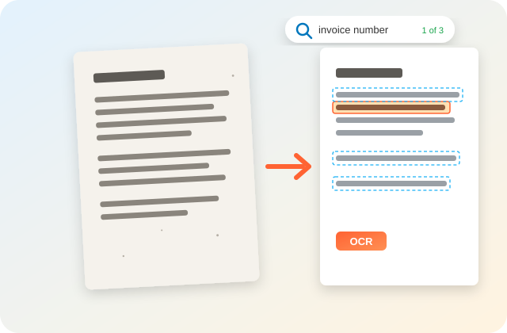

Add an invisible OCR text layer to scanned PDFs and photos so search, copy and screen readers work. The scan itself stays exactly as it was.

Open the PDF and press Ctrl+F (Cmd+F on Mac) to test search. The scan looks the same; the words sit in an invisible layer.
A searchable PDF converter runs OCR (optical character recognition) on a scanned PDF or photo and adds an invisible text layer behind each page. PDFdukan does this free, online and inside your browser, so Ctrl+F, copy and screen readers work while the scan looks exactly the same.
For PDF files, PDFdukan keeps the original page content and lays the recognized words over it, so the scan is not compressed a second time.
English, Urdu, Arabic, Hindi, Spanish, Chinese and more, plus a second language for mixed pages.
Skip pages that already have text keeps digital pages as they are and runs OCR only on scans.
Read the recognized text, copy it or save a .txt file, and see the average OCR confidence.
Join photos and PDFs into one searchable PDF, or get separate files in a ZIP.
| Item | Details |
|---|---|
| Input | PDF, JPG, PNG, WebP, BMP, GIF |
| Output | Searchable PDF, ZIP, plain text (.txt) |
| Size | 200 pages per job, 200 MB per file |
| Quality | High (300 DPI) or Fast (200 DPI) |
| Locked PDFs | Restricted files work; password files need it |
Choose the language printed on the page; Latin-script settings cannot read Urdu or Arabic letters. Keep High quality for small print, receipts and faded copies.
Pages must be upright, so rotate sideways scans first with Organize PDF. A sharp, evenly lit photo from the document scanner reads better than a tilted one.
No. PDFdukan runs Tesseract OCR in your browser tab. The OCR engine and language data download once from a public CDN; your PDF never leaves your device.
PDFdukan does not straighten tilted pages, read handwriting reliably or save PDF/A. OCR makes text searchable, not editable; for an editable file, use PDF to Word.
Yes. PDFdukan’s searchable PDF converter is free, needs no sign-up and adds no watermark. Jobs can hold up to 200 pages.
Try to select a word. If the whole page highlights like a picture, or Ctrl+F finds nothing, the PDF is a scan and needs OCR.
No. The text layer is invisible, so pages print and display as before. Only the file size grows a little.
Accuracy depends on the scan. In our test on clean printed invoices, every word was correct, while faint, tilted or handwritten pages give more mistakes. Always check names and numbers.
Yes. Add JPG, PNG or WebP photos and PDFdukan places each one on an A4-sized page with a text layer, joined into one PDF.
The browser downloads the OCR engine and language data once. After that, each page takes a few seconds, depending on your device.
Connect Google Drive to save selected outputs to your own Drive storage. Review the destination before uploading sensitive documents.
No account? Sign Up free